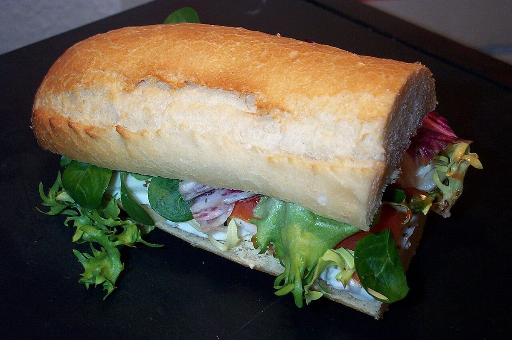

Boulangerie Komugi
お客様の声
※ イメージ例です。実在の口コミではありません。
VOICE
ご来店のお客様より
「カンパーニュが香ばしくて、毎週買いに行っています。」
40代・女性(イメージ例)「ロールパンがふわふわで、子どもが大好きです。」
30代・男性(イメージ例)「朝いちばんに行くと、焼きたてが買えて幸せです。」
20代・女性(イメージ例)
PHOTO
お店の写真



写真・店舗名・内容はすべて見本用の架空のものです
Boulangerie Komugi
※ イメージ例です。実在の口コミではありません。
VOICE
「カンパーニュが香ばしくて、毎週買いに行っています。」
40代・女性(イメージ例)「ロールパンがふわふわで、子どもが大好きです。」
30代・男性(イメージ例)「朝いちばんに行くと、焼きたてが買えて幸せです。」
20代・女性(イメージ例)PHOTO
